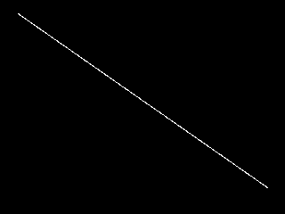
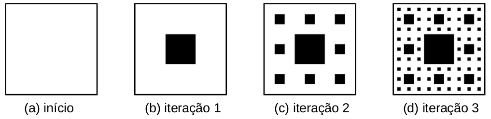
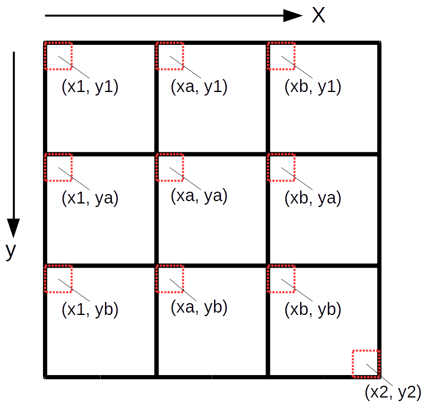
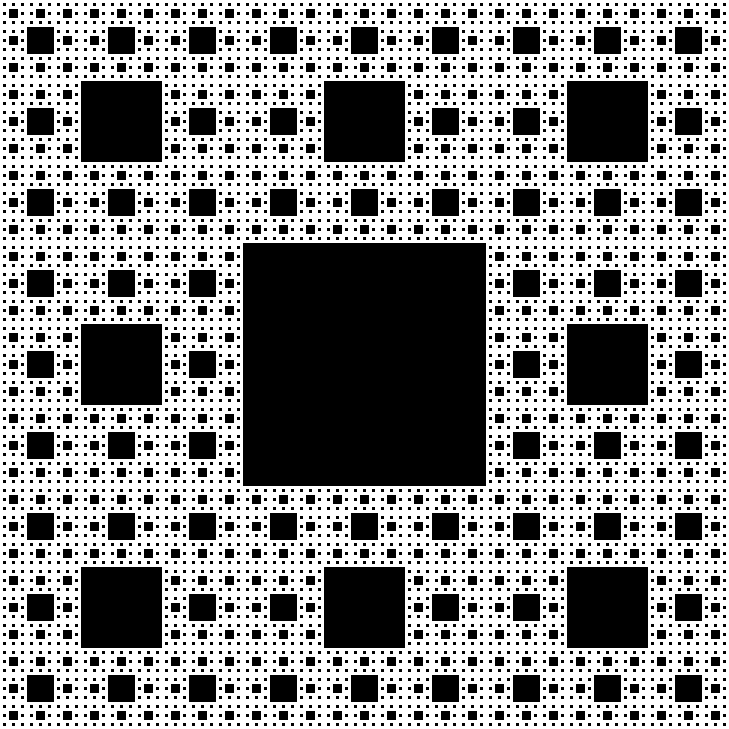

Vamos usar a seguinte função auxiliar para criar uma matriz,
onde m é o número de linhas,
n é o número de colunas e
val é o valor inicial de preenchimento dos elementos da matriz.
1 2 3 4 5 6 7 8 | def cria_matriz(m, n, val): matriz = [] for i in range(m): linha = [] for j in range(n): linha.append(val) matriz.append(linha) return matriz |
1 2 3 4 5 6 7 8 9 10 11 12 | def grava_PGM(matriz, nomearquivo): arquivo = open(nomearquivo, "w") arquivo.write("P2\n") m = len(matriz) n = len(matriz[0]) arquivo.write("%d %d\n"%(n,m)) arquivo.write("255\n") for i in range(m): for j in range(n): arquivo.write(" %3d"%(matriz[i][j])) arquivo.write("\n") arquivo.close() |
(x1, y1) e (x2, y2) das extremidades
de um segmento de reta e uma matriz representando uma imagem em tons de cinza, faça uma função recursiva que desenha o segmento de reta na imagem com um valor de intensidade fornecido.
Solução:
Na solução abaixo,
o problema original é decomposto em dois subproblemas
de mesma natureza, dividindo o segmento ao meio
em dois segmentos menores.
A cada passo as coordenadas do ponto médio (xm, ym)
são calculadas e duas chamadas recursivas são realizadas.
A parada da recursão acontece quando
o problema se torna simples, envolvendo dois pontos vizinhos ou iguais.
Neste caso a solução trivial corresponde a pintar os dois pontos.
Note, no entanto, que somente podemos acessar posições da matriz
utilizando índices inteiros, caso contrário, teremos o seguinte erro:
list indices must be integers or slices, not float.
O arredondamento das coordenadas é obtido somando 0.5 antes de truncar os números (desprezar a parte fracionária) com o comando int().
1 2 3 4 5 6 7 8 9 | def desenha_reta(matriz, x1,y1, x2,y2, val): if abs(x2-x1) <= 1 and abs(y2-y1) <= 1: matriz[int(y1+0.5)][int(x1+0.5)] = val matriz[int(y2+0.5)][int(x2+0.5)] = val else: xm = (x1+x2)/2 ym = (y1+y2)/2 desenha_reta(matriz, x1,y1, xm,ym, val) desenha_reta(matriz, xm,ym, x2,y2, val) |
1 2 3 4 5 6 | def main(): M = cria_matriz(240, 320, 0) desenha_reta(M, 20,15, 300,210, 255) grava_PGM(M, "reta.pgm")main() |

OBS: Um algoritmo mais adequado para o desenho de linhas, em dispositivos matriciais, corresponde ao algoritmo de Bresenham.
O objetivo deste exercício é fazer um programa em Python, usando funções recursivas, para gerar imagens (no formato PGM) com os desenhos de um fractal conhecido como Tapete de Sierpinski.
A construção do Tapete de Sierpinski parte de um quadrado, que é subdividido em nove partes. A parte central é removida, de modo que sobram então oito pequenos quadrados. Para cada um deles, é aplicado o mesmo processo de divisão em nove partes, retirando a parte central, e assim sucessivamente. Este processo pode ser repetido infinitamente, mas no contexto de imagens a repetição é feita até atingir um número máximo de iterações.

Solução:
A função tapete_sierpinski(n, niveis)
gera uma imagem quadrada nxn do tapete de Sierpinski,
onde niveis é o número máximo de iterações e o quadrado inicial do tapete corresponde a toda a imagem.
A função recursiva tapete_sierpinski_aux(matriz, x1,y1, x2,y2, niveis) realiza a divisão do quadrado, compreendido entre as coordenadas
(x1,y1) e (x2,y2), em nove partes e pinta a parte central de preto, conforme a ilustração abaixo.

1 2 3 4 5 6 7 8 9 10 11 12 13 14 15 16 17 18 19 20 21 22 23 24 | def tapete_sierpinski_aux(matriz, x1,y1, x2,y2, niveis): if niveis > 0: tam = x2-x1+1 xa = x1 + tam//3 xb = xa + tam//3 ya = y1 + tam//3 yb = ya + tam//3 tapete_sierpinski_aux(matriz, x1,y1, xa-1,ya-1, niveis-1) tapete_sierpinski_aux(matriz, x1,ya, xa-1,yb-1, niveis-1) tapete_sierpinski_aux(matriz, x1,yb, xa-1,y2, niveis-1) tapete_sierpinski_aux(matriz, xa,y1, xb-1,ya-1, niveis-1) tapete_sierpinski_aux(matriz, xa,yb, xb-1,y2, niveis-1) tapete_sierpinski_aux(matriz, xb,y1, x2,ya-1, niveis-1) tapete_sierpinski_aux(matriz, xb,ya, x2,yb-1, niveis-1) tapete_sierpinski_aux(matriz, xb,yb, x2,y2, niveis-1) for i in range(ya,yb): for j in range(xa,xb): matriz[i][j] = 0def tapete_sierpinski(n, niveis): M = cria_matriz(n, n, 255) tapete_sierpinski_aux(M, 0,0, n-1,n-1, niveis) return M |
nxn,
onde n é uma potência de três (ex: 3^6 = 729) e
o nome do arquivo de saída é tapete.pgm.
1 2 3 4 5 6 | def main(): n = 3**6 T = tapete_sierpinski(n, 5) grava_PGM(T, "tapete.pgm")main() |
